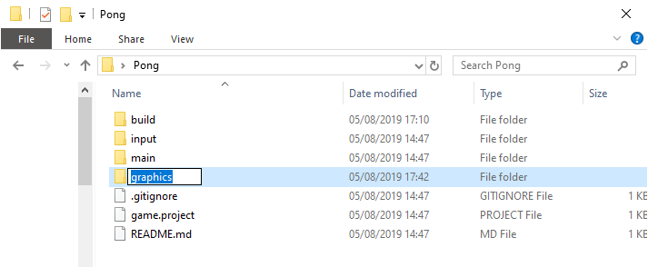
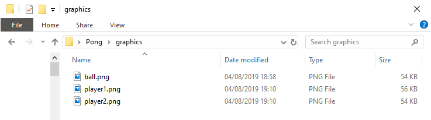
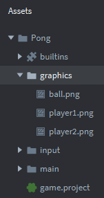
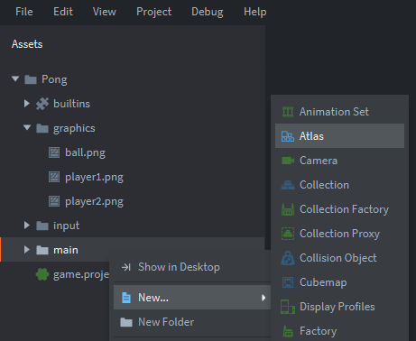
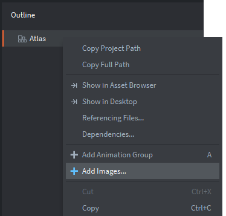
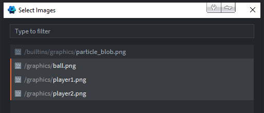

Tutorials for 2D games projects
Pong | Importing graphics into the game.
Before you begin to code the game you will need some images for the game, called sprites.
- Using Windows Explorer, find your Pong project folder and create a new folder called 'graphics'.

- Inside the graphics folder, download and save these sprites.
Right click each image below and choose, 'Save image as...'
player1.png player2.png ball.png

Go back to Defold and you should see the new folder and files in the assets panel. Note, there is no way to import graphics into Defold using the IDE. You have to do this in Windows.

Just saving files into a folder does not add them into your game. We need to create an atlas to store all our in-game graphics. An atlas is just a memory efficient repository for the binary graphics. It would be extremely inefficient if you had to load the graphics each time you needed to display them, or work with them in their native png file format. An atlas organises all the binary graphics data in memory to maximise the efficiency for Defold. Combining smaller images into an atlas is especially important on mobile devices where memory and processing power is more limited. More efficient use of memory means higher frame rates!
- In the assets panel, right click the 'main' folder and choose, 'New...' 'Atlas'.

- Give the atlas a name. It doesn't really matter what you call it. Since all our graphics will be stored in one atlas, we'll name it, 'graphics'. Click 'Create Atlas'.
Notice the atlas is now in the outline panel. It is part of our game, but it doesn't contain any sprites yet. - In the outline pabel, right click the 'Atlas' object and choose, 'Add Images...'.

- Select all the images from the graphics folder and click OK. You can click the first image, hold shift and click the last image to add them all at the same time. You can also add them one-by-one by repeating step 5 if you didn't read this far!

We now have graphics in memory for our game. You can press the F key to automatically zoom the editor panel to see them in the atlas.
- Save the changes by pressing CTRL-S or 'File', 'Save All'.
We now have the graphics we intend to use in the game stored in a CPU and memory efficient way. The png format that is useful for editing the image is now in a new raw binary form in memory that requires no decompression. The next stage is to create game objects that will use these graphics. Stage 3a >
 Craig'n'Dave | Version 1.3
Craig'n'Dave | Version 1.3